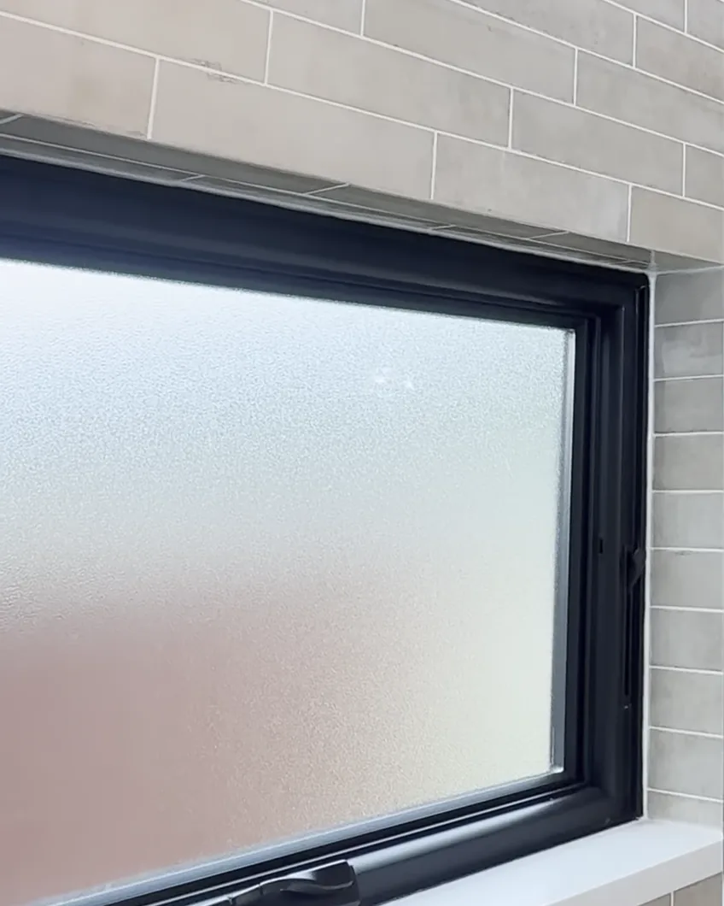

Dr. Phillips
Orlando, Florida

A guest bath that lost its drop ceiling and its tub, a second bath in a warmer palette, and the details Mike points out on film: mitered niches, a floating French oak vanity and frameless glass.
Under five minutes, start to finish: the soffits that came down, the tub that became a shower, the niches, the valves and the vanity, explained by the owner who oversaw the work. Tap the tile to play.
 Play · 4:43
Play · 4:43
Mike filmed this while the laundry room was still under construction, so you see both bathrooms just as they were finished: the green guest bath first, then the tan second bath that shares its layout and its tile.
More films on YouTube
Both rooms follow the same plan: the same layout, the same tile in two colors and the same fixtures, so the house reads as one design. As Mike puts it in the film, they liked the layout and they liked the tile, so the second bath simply changed the color.
Frames taken from the walkthrough: the second bath's hexagon shower floor, the window inside its shower with the matching quartz sill, and the floral accent tile inside its niche. Tap a photo to enlarge it.



Paraphrased from the film. These are the decisions that separate a bathroom that photographs well from one that lives well.
Before, soffit boxes dropped the ceiling to about seven feet along the vanity wall and over the shower, and the guest bath felt smaller than it was. Taking them out was the first decision. The room now reads at its full height without moving a single wall.
The guest bath vanity is Hallmark cabinetry in three-quarter-inch French oak, a line Posada carries as a dealer in Central Florida. The drawers are dovetailed with the rails mounted underneath, so no metal shows at the sides, and every drawer and door closes softly. It floats off the floor, which keeps the cabinet out of harm's way if water ever gets loose.
The quartz countertops are folded into a three-inch edge with an epoxy miter, so each top reads as one thick piece of stone. The shower niches are finished the same way, with an epoxy-mitered edge and an accent tile at the back. In the second bath the niche is smaller because the wall allowed less room, so the quartz window sill doubles as a shelf.
The second bathroom keeps the layout and the tile of the first in a warmer tan, with the same frameless glass, Delta valve and trim, Kohler Highline toilet and undermount Kohler sink. The shower is a little deeper and the shower head has adjustable spray settings. Everything inside the enclosure is fully waterproofed and backed by a lifetime warranty on the waterproofing system.
Every Posada bathroom begins with a complimentary in-home design consultation, where we tell you honestly which budget range your project falls into. From there, the process is the same seven steps for every home, and if you would rather spread the investment over time, financing options are explained on their own page.
A complimentary in-home design consultation. We listen first, then tell you honestly which range your project falls into. Evening and weekend consultations available.
Call or text · We reply within 24 hours